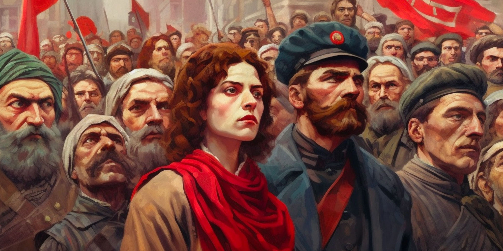

A spontaneous popular demonstration in Petrograd on 8 March 1917, demanding peace and bread, culminated in the February Revolution and the abdication of Nicholas II and the imperial government. The tsarist autocracy was replaced by the social-democratic Russian Provisional Government, which intended to conduct elections to the Russian Constituent Assembly and to continue fighting on the side of the Entente in World War I. At the same time, workers' councils, known in Russian as 'Soviets', sprang up across the country, and the most influential of them, the Petrograd Soviet of Workers' and Soldiers' Deputies, shared power with the Provisional Government
